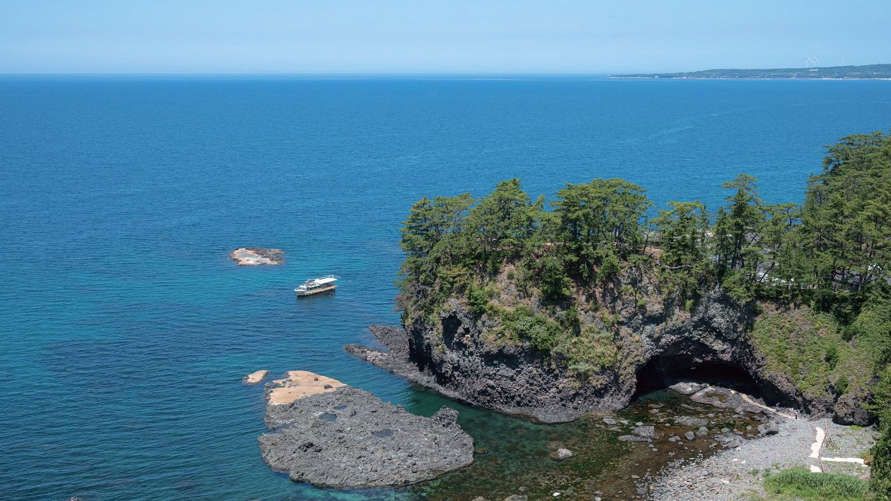

富来エリア
巌門がんもん
日本海が作り上げた芸術
日本海の荒波に削られた巌門の景観は古来から知られ、書画などを親しむ人の往来も多かったと伝えられています。
1853年には、風景版画の巨匠・歌川（安藤）広重の名作に数えられる「六十余州名所図会」に「滝之浦（巌門・不動滝・鷹巣岩）」として描かれました。
洞門の中からは水平線が見え、日の入りを美しく望むことができます。すぐ近くから出る能登金剛遊覧船に乗れば、海側から洞門をくぐり抜けることもできます。
PHOTOS
全31枚
巌門の写真
写真をクリックすると拡大表示します。